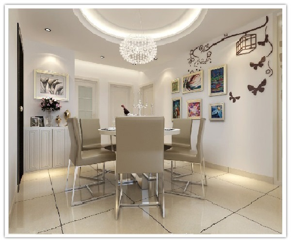
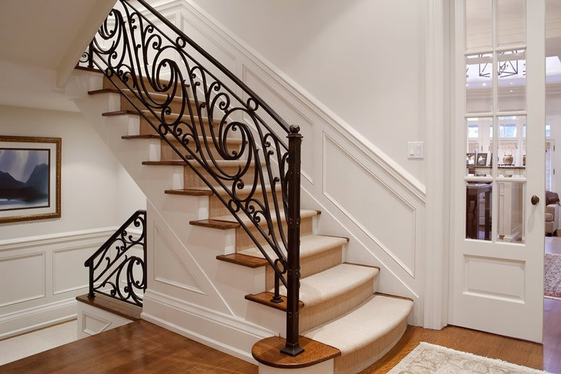
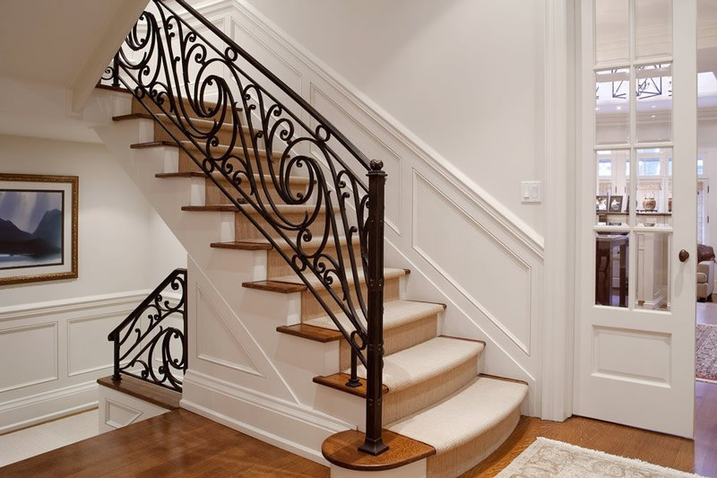

—————————————————————————————— 现代简约风格 ——————————————————————————————
more-
客厅客厅作为家庭生活活动区域之一，它既是全家活动、娱乐、休闲、团聚、就餐等活动场所，又是接待客人对外联系交往的社会活动空间，是家居生活的核心区域，又是接待客人的社交场所，是住宅空间的中心首脑和对外的一个窗口。因此，客厅装修是整个家庭装修的重点。由于有了重点的电视背景墙，所以其他地方的装饰可以简单点。
-
卧室卧室是不仅是睡眠休息的地方,而且是最具隐私性的空间，特别是主卧。简约中求艺术，化繁为简，以宁缺勿滥为精髓，合理的简化居室，从简单舒适中体现生活的精致。本案主卧的设计，将其与客厅、餐厅协调统一起来，床头背景都运用了相册，壁纸等材料，白色的背景更显简约、大方、明亮。从而营造一个现代化的主卧空间。
-
餐厅餐厅的环境设计重要的就是就餐环境的营造，实际风格要与整个居室风格一致协调。就餐环境的色彩设置，对人们的就餐心理影响很大。一是食物的色彩能影响人的食欲，二是餐厅环境的色彩也能影响人的食欲。餐厅的色彩因个人爱好和性格不同而有较大的差异。其他的软装饰品入挂画，可灵活安排但不可喧宾夺主，以免显得杂乱无章。
-
厨房现代化的厨房是家庭装修的重要组成部分，是制作食品的场所。光线充足、通风良好、环境洁净和使用方便是现代化厨房的装修基本要求。颜色的选择以清洁、卫生为主。本案设计的厨房，为了更加合理，采光更好，敲掉了部分墙面，扩大门洞面积。顶面采用铝扣板集成吊顶，更好的打造了一个现代化的厨房空间。
-
楼梯楼梯装修风格的设计，主要依靠楼梯材质 和样式的搭配，现代风格的楼梯一般通过应用大理石踏步、玻璃踏步搭配玻璃扶手来实现。现代风格的楼梯色彩都比较素雅，大理石踏步的颜色不宜过深，配上简洁的扶手，才能更好地体现简约清爽的感觉。现代风格的楼梯就打破了楼梯传统的沉闷和古板感，令整个室内空间更加清澈剔透。
-
阳台阳台是室内与室外之间的一个过渡空间，是用于通风、采光、纳凉、晒衣、晒物放植物等的地方。在阳台上，既可以坐在休闲椅上喝茶聊天，也可以晾晒衣物、养花种草，享受悠闲自然的生活情调。本案阳台装饰材料的选用立柜，用来区分空间。墙面和顶部一般使用内墙乳胶漆，乳胶漆品种和款式要与客厅、主卧相符。
 

———————————————————————————————— 古典风格 ————————————————————————————————
more客厅
客厅是传统与现代居室风格的碰撞，设计师以现代的装饰手法和家具，结合古典中式的装饰元素，来呈现亦古亦今的空间氛围。中式风格的古色古香与现代风格的简单素雅自然衔接，使生活的实用性和对传统文化的追求同时得到了满足。影视墙的造型简洁现代，却在醒目位置饰以中式书法，这种绝妙的组合给人以强烈的视觉意志力，成为时尚与古典的柔媚结合。
卧室
卧室在色彩方面秉承了传统古典风格的典雅和华贵，但与之不同的是加入了很多现代元素，呈现着时尚的特征。在配饰的选择方面更为简洁，少了许多奢华的装饰，更加流畅地表达出传统文化中的精髓。为了给居室增添几分暖意，饰以精巧的灯具和雅致的挂画，使整个居室在浓浓古韵中渗透了几许现代气息。
餐厅
餐厅在色彩方面与客厅色彩相辅相成，室内采用对称式的布局方式，格调高雅，造型简朴优美，色彩浓重而成熟，而餐厅的装饰采用简明硬朗的直线条，反映出现代人追求简单生活的居住要求，更迎和了中式家居追求内敛、质朴的设计风格，使餐厅更加实用、更富现代感。
厨房
餐厅装修一般的色彩配搭都是随着客厅的，因为目前国内多数的建筑设计，餐厅和客厅都是相通的，这主要是从空间感的角度来考量的。对于餐厅单置的构造，色彩的使用上，宜采用暖色系，因为在色彩心理学上来讲，暖色有利于促进食欲，这也就是为什么很多餐厅采用黄、红系统的原因。
楼梯
古典风格的楼梯台阶采用接近木制的色调，显现出主人宁静而不张扬的特点，轻声漫步过回廊，沉稳大方。拾阶而上，如翱翔云端，身边尽然是脱离尘俗的雅韵之气，古朴色的青砖台阶与木质扶手相互辉映十分协调，显示出一种严谨整齐的格局，映现出主人一丝不苟的风格。
阳台
阳台与客厅之间以门洞连接，具有层次感和立体感，带给人一种曲径通幽处的感觉，彰显出主人淡泊名利，优雅有内涵的风格。另外，阳台的家具也是讲究文化意蕴的，墙壁上的“禅”字、壁柜上的奔马、灯具上的竹叶装饰以及阳台上的茶具等装饰无一不显示出主人较高的审美情趣和社会地位。
———————————————————————————————— 推荐 ————————————————————————————————